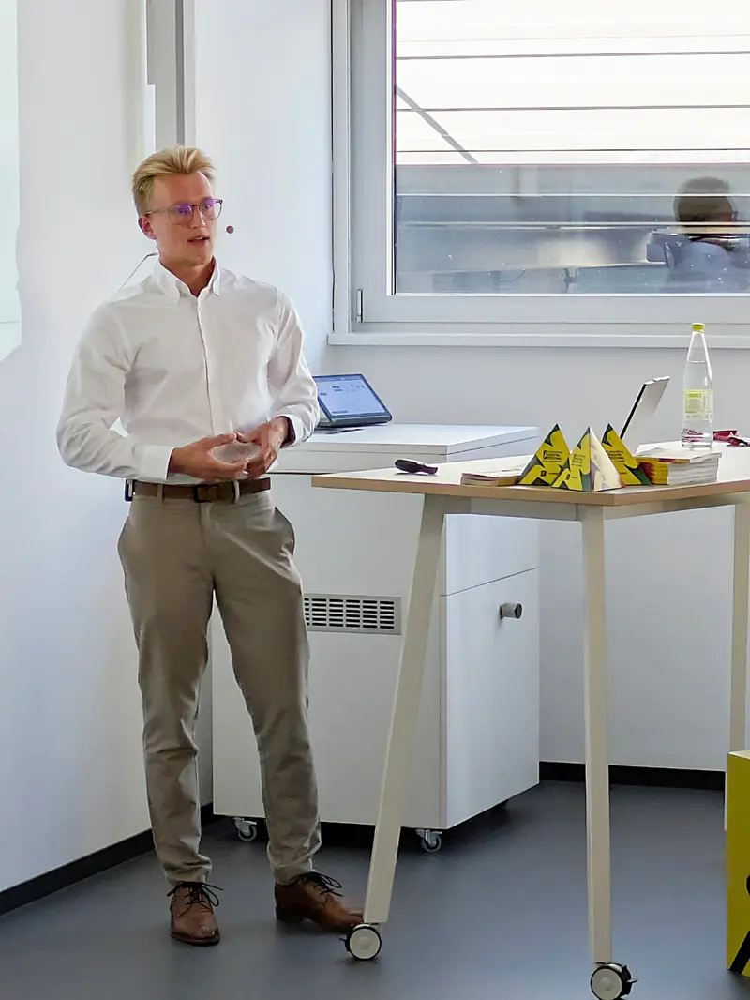

About
Research grounded in organisations and the people within them.
I study the intersection of technology, work and decision-making, with a particular interest in how generative AI becomes part of everyday organisational practice.

Biography
I am a research associate at the Schöller Endowed Chair of Information Systems at Friedrich-Alexander-Universität Erlangen-Nürnberg (FAU). My research focuses on human–AI collaboration and the introduction and use of generative AI across organisational and consumer contexts.
I studied Business and Economics with a specialisation in Information Systems at FAU from 2021 to 2024. My bachelor’s thesis examined the impact of generative AI on teams in organisations and later became a short paper at the European Conference on Information Systems (ECIS) 2025.
Since 2024, I have pursued an M.Sc. in International Information Systems at FAU. My studies included exchange semesters at National Taiwan University in Taipei and the University of Bern, bringing together perspectives from information management, computer science and business administration.
Before entering academia full-time, I gained practical experience at Siemens Mobility across several business functions and at its Barcelona location. This background shapes my interest in research that is theoretically meaningful and useful in organisational practice.
Trajectory
Experience across research, education and industry.
Research Associate
Schöller Endowed Chair of Information Systems, FAU Erlangen-Nürnberg
M.Sc. International Information Systems
FAU Erlangen-Nürnberg, including an exchange semester at the University of Bern
B.A. Business and Economics
Specialisation in Information Systems at FAU, including a semester at National Taiwan University
Industry experience
Siemens Mobility in Erlangen and Barcelona
At FAU
Research and teaching
Alongside my research, I contribute to teaching in data science, enterprise content and collaboration management, and the future of work. I am particularly interested in translating emerging AI practices into learning experiences that help students assess, use and design AI-enabled work systems responsibly.
View my official FAU profile